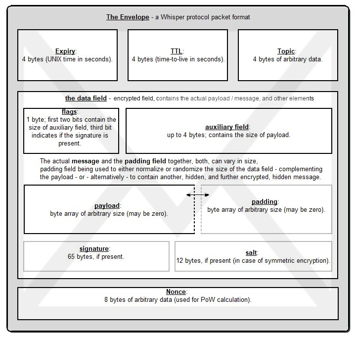

Deeper Down The Rabbit Hole
If you’re up for it, you can instead dive directly into the protocol specification.
Whisper is an identity-based messaging system which provides a non-application-specific API without being prejudiced by low-level hardware attributes and characteristics, particularly the notion of singular endpoints.
Alternatively, Whisper may be likened to a DHT with a per-entry configurable time-to-live (ttl) and conventions for the signing and encryption of values. Whisper also allows for the same entry to have multiple keys, some or all of which may be the same as other entries, which leads to collisions and is another means by which Whisper ensures plausible deniability.
Envelopes
Envelopes are like items should you think of Whisper as a DHT. Should Whisper be considered a datagram messaging system, then envelopes become the packet format which house encrypted datagrams. Envelopes are necessarily comprehensible by any node (i.e. they themselves are unencrypted).
Envelopes are transmitted as RLP-encoded structures. The precise definition is given by:
[expiry: P, ttl: P, [topic0: B_4, topic1: B_4, ...], data: B, nonce: P]
| param | Description |
|---|---|
| expiry | 4 bytes (the intended expiry UNIX time for the envelope in seconds). |
| ttl | 4 bytes (time-to-live in seconds). |
| topic | 4 bytes of arbitrary data. Can be an array. |
| data | byte array of arbitrary size (contains encrypted message). |
| nonce | 8 bytes of arbitrary data. This is used for the PoW calculation, calculated by taking the SHA3 of the concatenation of the nonce with the RLP packet less the nonce. The smaller it is, the higher the work proved. |
| AESNonce | 12 bytes of random data (only present in case of symmetric encryption). |
While envelopes are not encrypted, Whisper nodes know nothing about content of envelopes which they cannot decrypt.
Topics
Topics are short strings - hashes to be precise - which are set by the sender (or at the application layer) and help categorize messages. In more technical language: topics are cryptographically secure, probabilistic, partial-classifications of the message.
Nodes pass envelopes around regardless of their ability to decode the message as this is an important component in Whisper’s dark communications strategy (detailed in the next page).
Upon receipt of a message, if the node detects a known topic, it tries to decrypt the message with the corresponding key. In case of failure, the node assumes that a topic collision has occurred, e.g. the message was encrypted with another key, and should be just forwarded further. Collisions are not only expected, they are necessary for plausible deniability.
Four bytes was chosen to minimise space should a large number of topics be mentioned, while still keeping a sufficient amount of space to avoid large-scale topic-collision (though it may yet be reviewed and possibly made dynamic in later revisions of the protocol).
Messages
A message is formed as the concatenation of a single byte for flags, followed by any additional data (as stipulated by the flags) and finally the actual payload (i.e. message). This series of bytes is what forms the data item of the envelope and is always encrypted.
In the present protocol version, no explicit authentication token is given to indicate that the data field is encrypted; any would-be readers of the message must know ahead of time, through the choice of topic that they have specifically filtered for, that the message is encrypted with a particular key. This is likely to be altered to include a MAC.
Any determination that the message is indeed from a particular sender is left for a higher-level to address. This is achieved through the Javascript API, which allows the _to parameter to be passed only at the point of specifying the filter. Since the signature is a part of the message and not outside the envelope, those unable to decrypt the message data are also unable to access any signature. Any message is therefore constructed as follows:
1. flags: 1 byte |
The first 2 bits of the flags field specifies the size of the auxiliary field and the third bit indicates whether a signature is present. A message is invalid if bit 2 is set but the total data is less than 66 bytes (since this wouldn’t allow it to contain a signature).
Encrypting
All messages are encrypted. Asymmetric encryption uses the standard Elliptic Curve Integrated Encryption Scheme with a SECP-256k1 public key. Symmetric encryption uses AES GCM algorithm with random 96-bit nonce.
Payloads are encrypted in one of two ways. If the message has a specific recipient, then it is encrypted using ECIES with the specific recipient’s SECP-256k1 public key. If the message has no recipient, then we use AES-256 with a randomly generated key. This key is then XORed with each of the full topics to form a salted topic. Each salted topic is stored prior to the encrypted data in the same order as the corresponding topics are in the envelope header.
Decrypting
Recipients decrypt messages in one of two ways. Through the use of topics, it should be known whether the envelope is meant for a specific recipient (in which case, use the private key to decrypt) or to a general multicast audience. If intended for a general audience, we assume that at least one topic is known (since otherwise, the envelope could not be properly “identified”). In this case, we match the known full topic to one of the abridged topics in the envelope, determine the index and de-salt the according salted-key at the beginning of the data segment in order to retrieve the final key.
The signature, if provided, is the SHA3-256 hash of the unencrypted payload signed using ECDSA with the insertion-identity’s secret key.
The signature portion is formed as the concatenation of the r, s and v parameters of the SECP-256k1 ECDSA signature, in that order. v is non-normalised and should be either 27 or 28. r and s are both big-endian encoded, fixed-width 32-byte unsigned.
The payload is otherwise unformatted binary data.
In the Javascript API, the distinction between envelopes and messages is blurred. This is because DApps should know nothing about envelopes whose message cannot be inspected.
Here’s a picture for those who don’t like so many words:

Bloom Filters
Bloom filters are a probabilistic data structure that we can use to verify the presence - or absence - of an item within a list, or collection. To be more specific, it can verify with certainty that an item is NOT in the list, and it can say with probability that item IS in the list. It can do this in a fairly fast and space-efficient way.
This gets technical, so buckle in. The Bloom filter is used to identify a number of topics I may be interested in to my peers without compromising (too much) my privacy over precisely what topics interest me. Precise control over the information content (and thus efficiency of the filter) may be maintained through the addition of bits and is something that can be implemented client side, i.e. by the user.
Bloom filters are formed by the bitwise OR operation on a number of bloomed topics. The bloom function takes the topic and projects them onto a 512-bit slice. At most, three bits are marked for each bloomed topic.
The projection function is defined as a mapping from a 4-byte slice S to a 512-bit slice D; for ease of explanation, S will dereference to bytes, whereas D will dereference to bits.
LET D[*] = 0 |
Further information can be found in EIP 627.
PoW Actual Calculation
The Proof of Work for Whisper envelope is defined as the average number of iterations required to find the current BestBit (the number of leading zero bits in the hash), divided by message size and ttl:
PoW = (2**BestBit) / (size * TTL)
PoW calculation:
fn short_rlp(envelope) = rlp of envelope, excluding nonce field. |
where size is the size of the full RLP-encoded envelope.
What Does It All Mean?
All the above features combine into a dark system: i.e. one that is uncompromising when it comes to information leakage from metadata. In its most secure mode of operation, Whisper can (at a considerable cost of bandwidth and latency) deliver 100% dark operation. Even better, this applies not only for metadata collection from inter-peer conduits (i.e. backbone dragnet devices), but even against a much more arduous 100% - 2 attack; i.e. where every node in the network is compromised (though functional) save a pair running ÐApps for people that wanted to communicate without anybody else knowing.
:mind_blown: